Доиндоевропейский период освоения территории
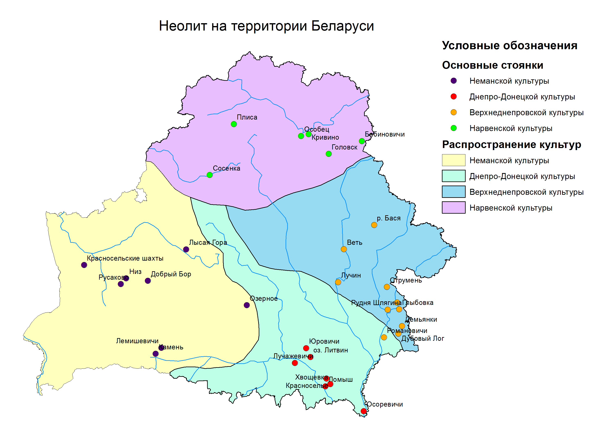
Первые люди, которые появились на территории Беларуси в мустьерскую эпоху (150–35 тыс. лет назад) и были неандертальцами. О проникновении неандертальцев на территорию Беларуси свидетельствуют археологические находки возле деревень Светиловичи, Обидовичи, Бердыж.
Полное заселение Беларуси произошло в мезолите около 10 тысяч лет назад. Активно воздействуя на природу человек заложил основы культуры, создание своего культурно географического пространства. Самая древняя на белорусских землях стоянка человека каменного века находится на Припяти, возле деревни Юровичи Калинковичского района на Гомельщине. Здесь жили люди 24 тыс. лет до н. э. Вторая стоянка открыта на берегу реки Сож, возле деревни Бердыж Чечерского района.
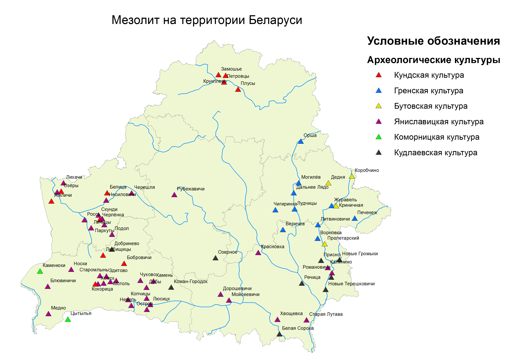
В мезолите в долинах крупных рек Беларуси жило уже первое взрослое (автохтонное) население. Бывшая относительная изолированность племен все чаще нарушалась.
Были распространены культуры:
1) Кундская - на севере страны, а также встречается на северо-западе
2) Гренская - на востоке страны, в среднем течении реки Днепр и Сож
3) Бутовская - на востоке страны, в верхнем и среднем течении реки Сож
4) Яниславицкая - на юго-востоке и востоке страны, в верхнем течении реки Припять и Немана с притоками
5) Коморницкая - на юго-востоке страны, в районе реки Западный Буг с притоками
6) Кудлаевская - на юге страны, в среднем и нижнем течении реки Припять с притоками, нижнем течении реки Днепр и Сож
Каменный век завершился эпохой неолита (новый каменный век, 4 – 3 тыс. лет до н.э). Много неолитических родовых общин жило по обеим сторонам Днепра. В бассейне Припяти довольно плотно было заселено её верховье и соседние озера, берега Стыры, Горыни, Ясельды, районы Наровли и Мозыря. На территории современной Беларуси выявлено более 500 поселений эпохи неолита.
На карте показаны исследованные поселения (основные стоянки), а также области распространения таких культур как: Неманская, Днепро-Донецкая, Верхнеднепровская, Нарвенская.
Индоевропейский период освоения территории
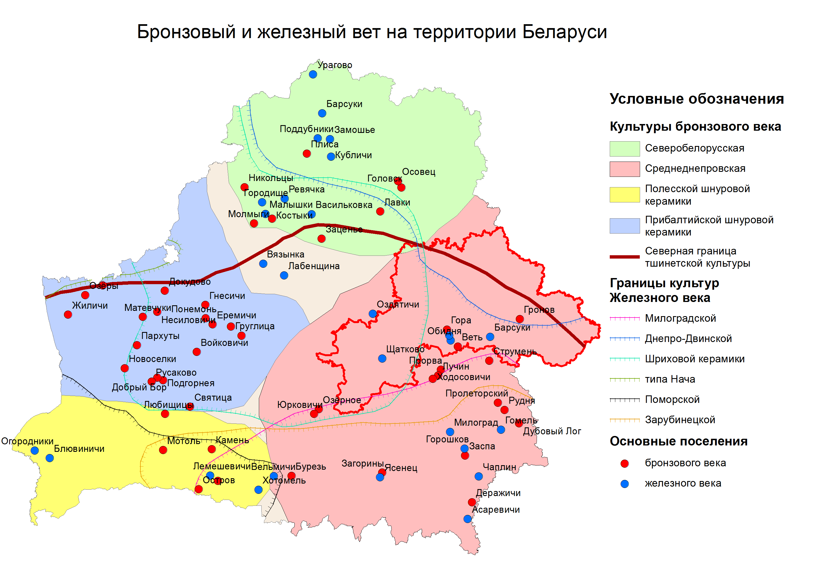
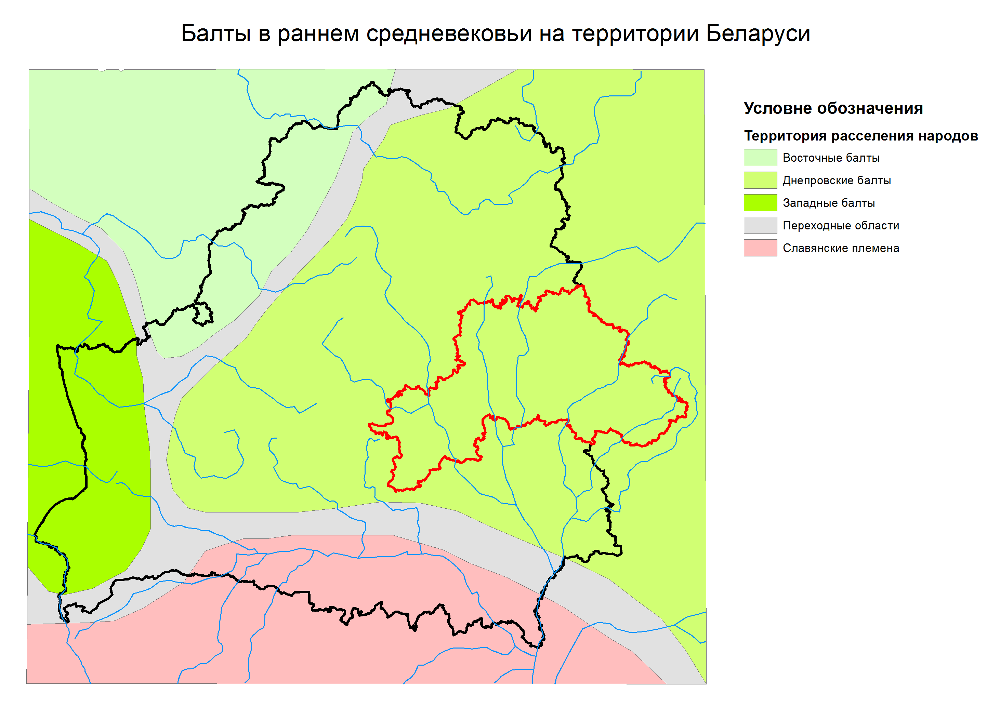
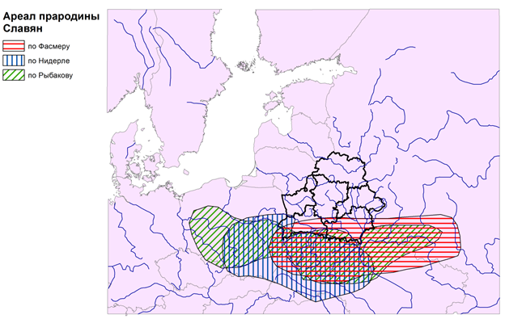
Прародина славян. Считать славян более древним этносом можно, с одной стороны, из-за их связи с тшинецкой культурой (II пол. Ш тыс. до н.э.; племена между Вислой и Средним Днепром). Славяне могли заселить Европу в VI-IV вв. до н.э., т.к. около XV-IV вв. до н.э. из культуры полей погребальных урн выделилась лужицкая культура, с которой в дальнейшем связаны и славяне. Некоторые считают праславян носителями чернолесской (Х-VII вв. до н.э.) культуры в Поднепровье, связывают их с неврами и скифами-земледельцами (согласно Геродоту). Существует и мнение о связи с милоградской (VII-III вв. до н.э.), зарубинецкой (конец 1 тыс. до н.э., Припять и среднее Поднепровье; ее преемница – киевская культура (II-V вв. н.э.).
Славянский элемент есть в черняховской культуре (Ш-IV вв.). Не вызывает сомнения, что славянам принадлежали пражская (V-VII вв.; между Днепром, Припятью, Эльбой и Дунаем), банцеровская, колочинская, культура длинных курганов лесной зоны (Ш чтв. 1 тыс. н.э.).
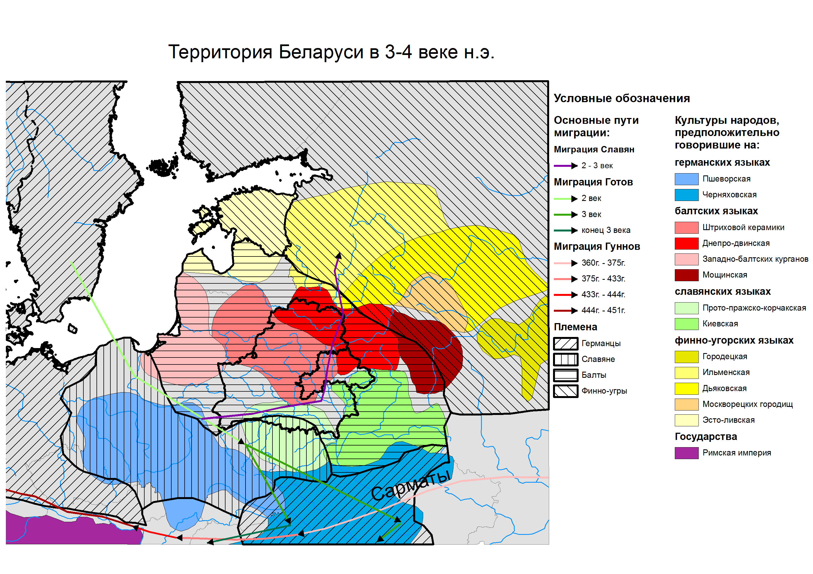
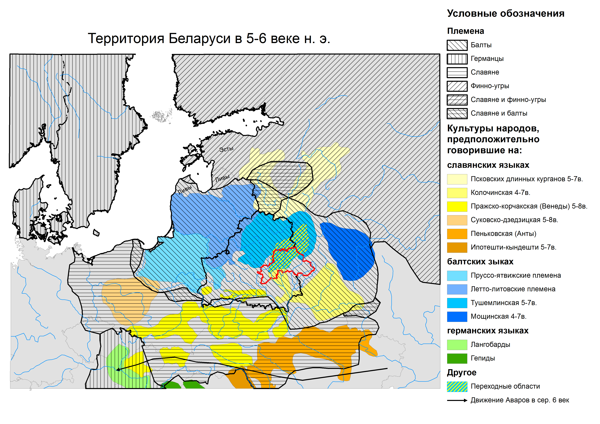
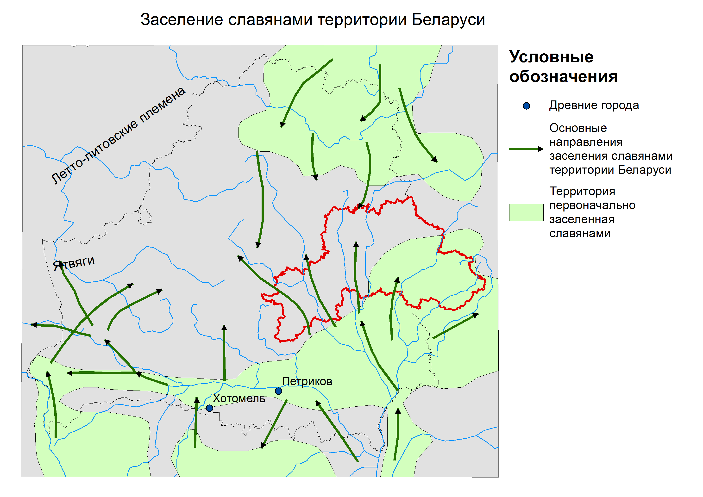
Славяне выделились из индоевропейской этнической группы в самостоятельную примерно к середине I тысячелетия до н.э. Массовые миграции людей в эпоху Великого переселения народов (III-VII век н.э.) влияли и на подвижность славян. В V-VI веках н.э. они появились на Балканах, откуда начали двигаться в сторону богатых римских провинций и на восток. На территорию Беларуси первые славяне пришли с юга примерно в VI-VII в., когда возраст балтских древностей тут достигал уже двух тысячелетий. Хронологически это совпало с началом распада общеславянского языка. Двигаясь по рекам, славяне селились рядом с балтами. Они превосходили их по уровню социальной организации, имели более развитое хозяйство[11].
Територию Беларуси занимали кривичи, дреговичи и радимичи. Примерно с X века кривичи и дреговичи начали колонизацию Понемонии, заселеной племенами ятвягов по левую и литвы по правую сторону Немана. Туда же направились вoлыняне и древляне. Однако ассимиляция балтов тут происходила очень медленно, потому Понемония еще веками оставалась смешенной балто-славянской зоной. Кривичи, дреговичи и Радимичи были не родоплеменными, а территориально-политическими образованиями. Колонизация земель, ранее обжитых иным населением, требовала от их мощной военной организации, возведения своих опорных пунктов - городов, которые выполняли функцию и административных центров, и форпостов освоения новой территории [19].
О том, как и когда расселились славяне на территории Беларуси, письменных источников почти не сохранилось. Поэтому до настоящего времени не стихают научные споры, имеют место различные точки зрения, гипотезы по всем этим вопросам. Основные данные, если не считать кратких сведений о расселении славян в «Повести временных лет», ученые черпают из археологических источников. Археологи выделяют разные культуры и идентифицируют их с теми или иными этническими группами. Они отмечают, что на юге Беларуси сохранились памятники пражской культуры.
На основную территорию Беларуси и соседних регионов в V - VIII в. селились другие племена, которые оставляли после себя памятники так называемой банцеровской культуры. Что касается принадлежности банцеровской культуры, то между учеными нет единого мнения. Одни считают ее балтской, другие - славянской. Происходит это от того, что при раскопках в материальной культуре обнаруживаются признаки культуры и славянской, и балтской[19].
Сторонником первой гипотезы В. Седов: под балтским субстратом понимается этнокультурное население балтского этноса, оказавшее влияние на формирование белорусской народности, в результате славянизации балтского населения, смешения с ним славянского, произошло отделение части восточно-славянской народности, что привело к становлению белорусского языка и народности. Другие исследователи утверждают, что расселившись на территориях, которые ранее занимали балтские племена, славяне частично оттеснили их, частично уничтожили. И только небольшие островки балтов, которые вероятно подчинились славянам, сохранились в Подвиньи, Верхнем Поднепровье. Но за балтами остались правобережье среднего Понеманья и некоторые части территории между Неманом и Припятью [20].
Сторонники другой точки зрения представляют себе эту картину несколько иначе. Во-первых, они считают, что сторонники вышеизложенной гипотезы преувеличивают роль балтов в этногенезе белорусов. Другое дело, отмечают они, Среднее Понеманье, где балты составляли значительную часть населения еще на начало II тысячелетия. В славянизации этих земель значительная роль принадлежит волынянам, дреговичам, в меньшей степени - древлянам и кривичам. Они признают, что основу старобелорусского этноса составляли кривичи, дреговичи, радимичи, в меньшей степени - волыняне. Радимичи в равной степени участвовали в формировании белорусов и одной из групп русского этноса. Кривичи сыграли большую роль не только в формировании белорусов, но и в становлении северо-западной части русского этноса.
Главным занятием населения белорусских земель было земледелие. Восточные славяне принесли более прогрессивную форму земледелия - пахотную, но продолжали использовать и подсечное земледелие. Сеяли рожь, пшеницу, просо, ячмень, лен. Важную роль играло животноводство. Семьи, объединенные общностью хозяйственной жизни, образовали сельскую (соседскую) или территориальную общину. Обрабатываемая земля, леса и водоемы были собственностью всей общины. Семья пользовалась отдельным участком общинной земли - наделом. В IX - XII вв. у восточных славян складывается феодальный уклад. В это время образуются города. Одни выросли из укрепленного сельского городища как Полоцк, другие как княжеские замки - Менск, Гродно, Заславль. Третьи возникали на торговых путях. Славяне исповедовали языческую религию. Они верили в бога солнца, огня, Перуна и др. Умерших хоронили в ямах, насыпая над ними курганы. Верили в загробную жизнь.
Словене были тем славянским племенем, которое первое большой массой шло с запада через Беларусь и частично осело в ней. Еще И.Забелин убедительно довел факт продвижения словенов по Неману. Действительно, наличие на всем протяжении этой реки и ее правых притоков, а также притоков Верхнего Днепра и Двины таких топонимов, как Славентишки, Славенск, Славагощ, Славени и им подобные, подтверждает такой вывод. И. Забелин считал, что Словенск (сейчас деревня в Воложинском районе) и Славогощ (Логойский р-н) долгое время были важными центрами словенской колонизации. Правда, П. Шафарик думал, что топонимы Словени и им похожие были свидетельством того, что в доисторические времена на территории Минской, Могилевской и Волынской губерний жили словене, которые в VI ст. переселились на Балканы, а их место заняли другие славянские племена, и потому названия кривичей, полочан усилились, а имя словен уменьшилось и осталось только за ильменскими словенами.
Ермалович полагает что словене, выжатые кривичами, которые пришли позже, вынуждены были отступать на север, к Ильмени, где и создали позже свое княженье. Возможно, отныне и берет начало враждебность между кривичами-полочанами и словенами-новгородцами, которая также выразительно выявлялась в более позднее время. [19].
Кривичи отыграли первостепенную роль в формировании белорусского народа. Они, бесспорно, были самым многочисленным восточнославянским племенем. Об этом свидетельствует та огромная территория, на которой они расселялись. И по сегодняшний день идут споры о том, были ли кривичи славянами. Но совсем недавно вновь всплыла на поверхность мысль Шлецера, и про их сказано, что они были либо восточным балтским племенем, либо сильно балтизированными славянами.
Данные, которые имеются в распоряжении современной исторической науки, дают повод считать устарелой мысль о приходе кривичей с юга. Действительно, тяжело представить, чтобы такое сильное племя как кривичи могло быть вытеснено с юга Беларуси дреговичами, как в свое время считал П. Голубовский и другие исследователи. Кроме того, очень сильно отличаются археологические культуры кривичей и славян Среднего Приднепровья. Отличие наблюдается и в языковых особенностях этих славянских групп. В начале 20-х годов XXI века К. Буга и А. Спицин озвучили мысль о западном происхождении кривичей: первый - с Польши, второй - с Германии. В последнее время этот взгляд на разностороннем научном материале подтвердил В. Седов. Обратим внимание на существование кривичских топонимов в полабских деревнях, что упоминаются в грамотах около 1160 и 1320 гг. Также немало кривичских топонимов рассыпано на польских землях. Мы находим их в бывших губерниях: Варшавской, Келецкой, Плоцкой, Седлецкой и Пертековской. Oсобенно много кривичских топонимов в бывшей Сувалксой губернии: Крейвяны, Крейвае, Крейва, Крживульки, Крживец, Кревнишки, Крживе, Крейвинцы, Крейве и т.д [19].
Нельзя также обойти факт не явности кривичских топонимов в Венгрии, Галиции, на Волыни, в бывшей Киевской губернии. Все выше указанные топонимы опровергают мысль, что кривичами стала называться та группа славян, которая ассимилировала местное иноплеменное население Беларуси. Как видим, кривичами они назывались еще до прихода на нашу землю. Вероятно, что дальнейшее продвижение кривичей на север северо-восток было остановлено словенами, и это вынудила первых повернуть на юг и осесть на р. Полоте. Возникновение Полоцка на правом береге Двины - еще одно доказательство того, что кривичи шли сюда с севера, а не с Приднепровья. Полоцк стал одним из крупнейших опорных пунктов кривичей после Крева и Кривич-города (Вильно), что дало ему возможность стать в дальнейшем государствообразующим центром [12].
Расселивших на верховьях Немана, Двины, Днепра и Волги, кривичи держали в своих руках узлы всех главных путей Восточной Европы. С одной стороны, это содействовало их еще большему расселению, а с другой стороны, разные речные системы, которые они заняли, и разные этнические субстраты, которые они вобрали в себя, разрушили их единство и племенную связь, поставили их в разные этнические, экономические и политические условия.
Дреговичи жили в южной части Беларуси в VIII-XII вв. Центрами торговли и ремесла у них были Туров, Пинск, Давид-Городок, Слуцк, Брест, Клецк, Копыль, Рогачев. На кривичско-дреговичском пограничье стояли Минск, Логойск, Борисов. Предшественником и этническим истоком дреговичей было старославянское населения пражской культуры побережья Припяти. Распространяясь на север дреговичи активно ассимилировали балтов. Наиболее известное государственное образование дреговичей - Туровское княжество. Время его возникновения летописи относят к второй половине X в. Однако довольно быстро Туровское княжество попало под киевское господство, из-под которого освободилось только в XII в [19].
Радимичи — летописное объединение IX-XII веков, традиционно считающееся славянским племенем. Проживали радимичи в междуречье верхнего Днепра и Десны по течению Сожа и его притоков (Гомельская и Могилёвская области Республики Беларусь), и по размеру заселенной ими территории несравненно уступали кривичам и дреговичам, тем не менее они вместе с последними внесли огромный вклад в белорусское народообразование. В последнее время сделана попытка показать на материале гидронимии, что Верхнее Приднестровье, которое находилось в ближайшем соседстве с ляшской территорией, было тем местом, откуда пришли Радимичи в Посожье.
Согласно с другой современной гипотезой, Радимичи, как и вятичи, пришли с берегов Вислы. Это обусловлено тем, что дунайские славяне под натиском аваров, а после Византии и романского населения должны были отступать на север, в долину реки Вислы, и на северо-восток, в лесную зону Восточной Европы. Радимичи и вятичи пошли на восток. Похоже, приход радимичей был далеко не мирный. Приходом радимичей не исчерпывается вопрос славянского заселения Беларуси[12].
Очевидно, приход славян был особенно продолжительный из-за Одры и Поморья. Нежелание этих славян покориться немецкой власти и христианизации вынудила их оставить свою родину и идти на восток, где господствовало язычество. К сожалению, и про эти переселения мы не имеем письменных источников и потому пользуемся топонимическими данными. На карте Померании XVII века мы находим поселок Раков. Очень вероятно, что выходцы с этого поморского Ракова основали в Беларуси Раков (теперь Воложинский р-н). Рядом с этим Раковом находится деревня Поморщина. Возможно, что в эту местность переселилась и часть племени ротаров, на что указывает название деревни Ротынцы. Топонимика показывает и на поселения в наших древних землях пенян, ситнян, ранов, кашубов, мазуров, поляков, чехов [19].
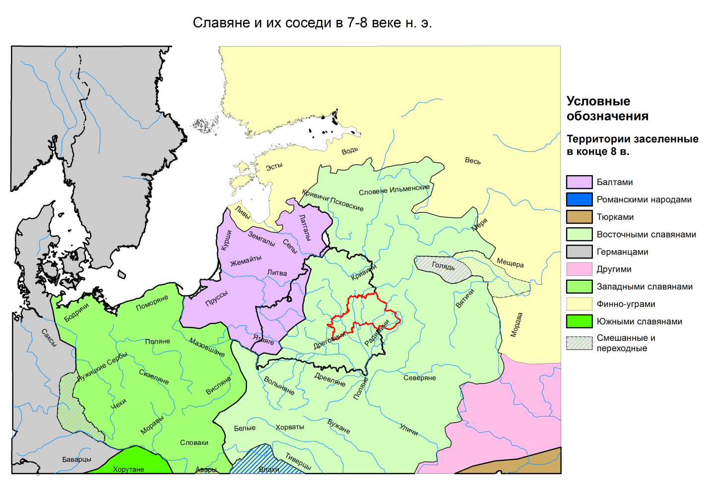
В VI — VII вв. начал формироваться белорусский этнос. Это привело к возникновению балтских племён литвы, ятвягов, а также славянских этнических общностей кривичей, дреговичей, радимичей. Последний составляли часть древнерусской народности, создавшей в IX в. государство Киевскую Русь[11].
Исторически Белой Русью назывался регион на востоке нынешней Беларуси: Могилёвщина, Витебщина и Смоленщина. В средние века самоназванием белорусов было «литвины», но впоследствии название «Белая Русь», «Белоруссия» распространилось на всю территорию нынешней Беларуси [12].
Происхождение названия «Белая Русь» некоторые исследователи связывают с синонимом «белая» в значении «независимая, свободная», другие — с более ранней христианизацией по сравнению с соседней языческой Русью Черной (на территории современной западной Беларуси) или с преобладающим цветом одежды и облика населения [12].
Образование Беларуси
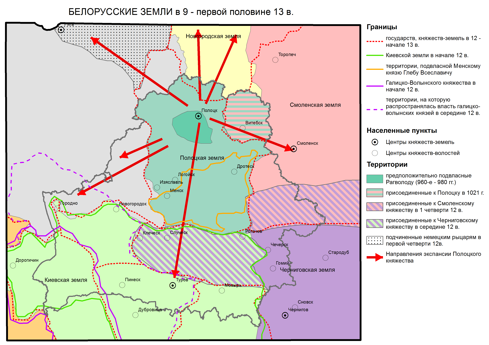
С Х в. известны первые белорусские государства — Полоцкое, Туровское и Смоленское княжества. В конце столетия в Киевской Руси было принято христианство византийского обряда, начали распространяться письменность, образование. Это имело важное значение для дальнейшего развития и белорусских земель.
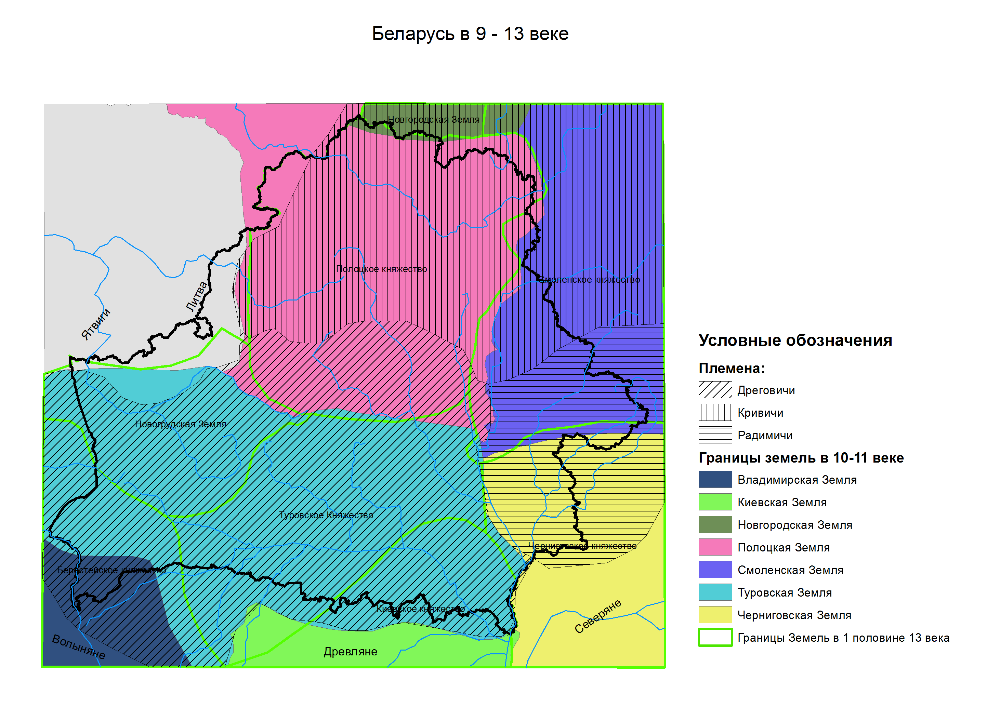
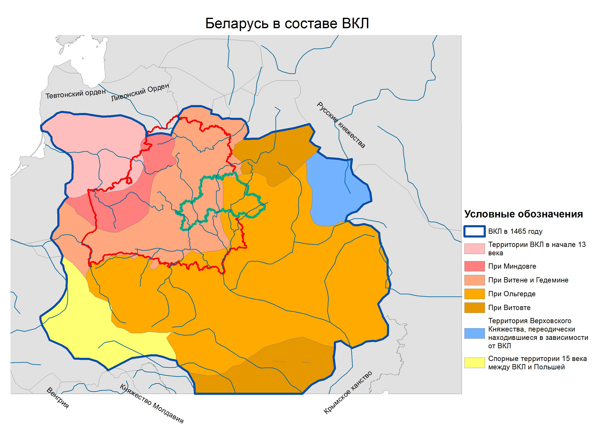
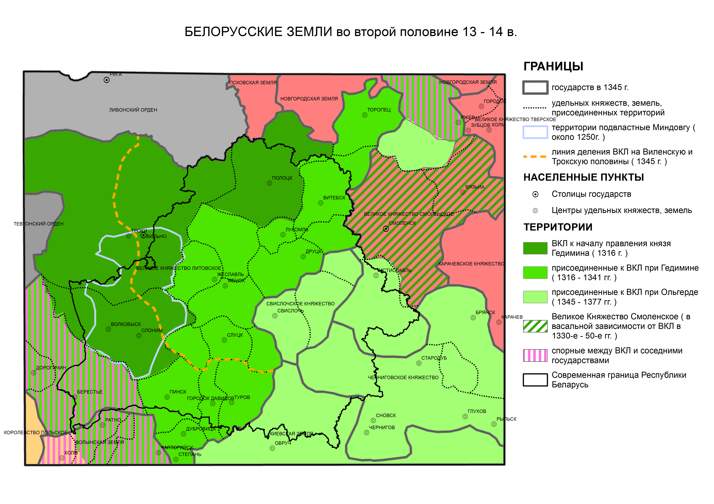
В XIII в. белорусские княжества, объединившись перед угрозой монголо-татарского нашествия, образовали одну из крупнейших феодальных монархий Европы — Великое княжество Литовское. Полиэтническая культура этой державы отличалась высоким уровнем и получила признание в Европе. Своды правовых документов — Статуты Великого княжества Литовского, явились классическим образцом оформленного феодального права средневековой Европы. Территорию Беларуси называли в те времена страной городов и замков [11].
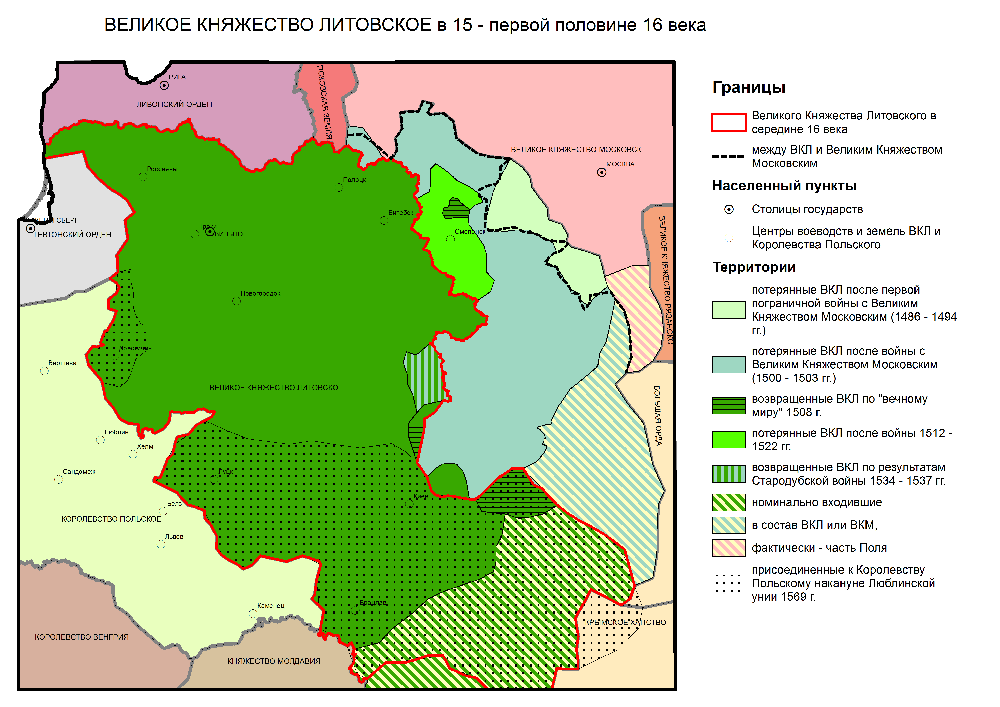
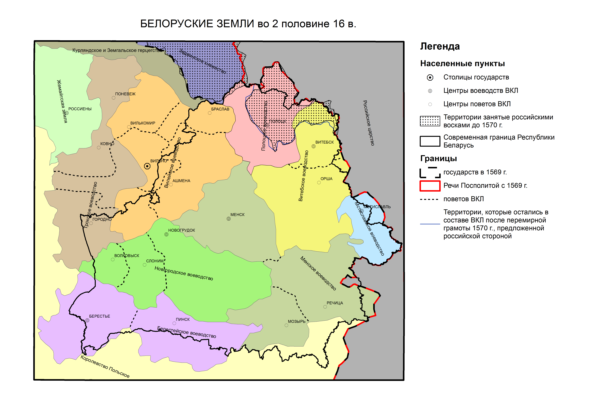
Беларусь на протяжении столетий была ареной кровопролитных войн. В ходе Ливонской войны в 1558-1583 гг. страна лишилась половины своих жителей. Непрерывные войны против Московии, казаков, крестоносцев привели к тому, что на сегодняшний день Беларусь - одна из наименее густонаселённых стран Европы.
В средние века Беларусь была неотъемлемой частью общеевропейских культурных процессов. Благодаря достижениям прошлых столетий, богатой народной культуре и благоприятному влиянию гуманистических идей европейского Возрождения XV-XVII века стали "Золотым веком" белорусской культуры. В середине XVI века Беларусь была затронута процессом Реформации. В Несвиже, Берестье, Клецке и десятках других городов возникли протестантские общины, известнгыми деятелями Реформации в Беларуси стали Сымон Будны, Василь Цяпински и другие.
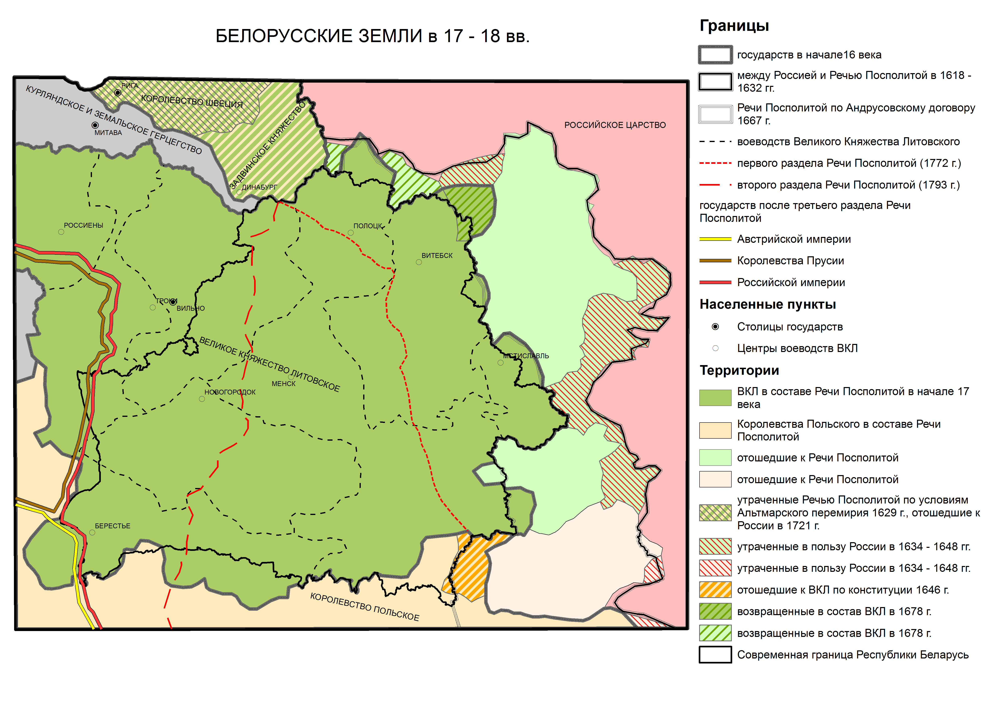
В 1569 г. Великое княжество Литовское и Королевство Польское объединились на федеративной основе в новое государство — Речь Посполитую. Опустошительная Северная война 1700-1721 гг. стоила Беларуси трети населения. Крупнейшие белорусские города лежали в развалинах, городское население было уничтожено практически полностью.
В конце XVIII в. Беларусь была присоединена к Российской империи. Новые территории включились в общероссийскую хозяйственную систему, стабилизировалась политическая жизнь. В то же время Беларусь страдала под гнётом руссификации и крепостничества.
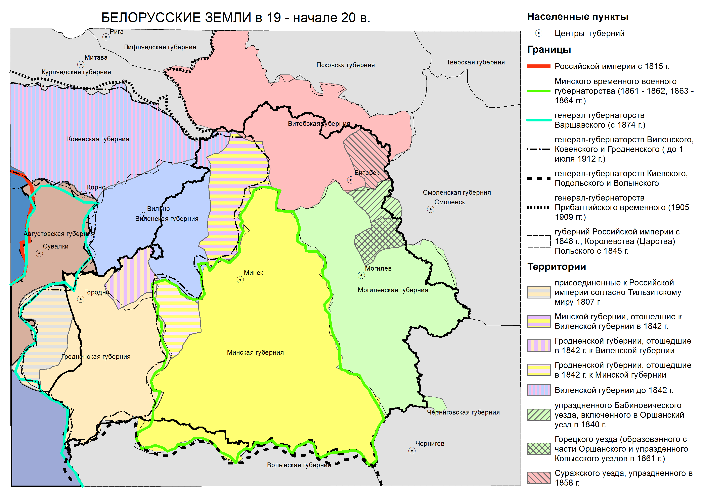
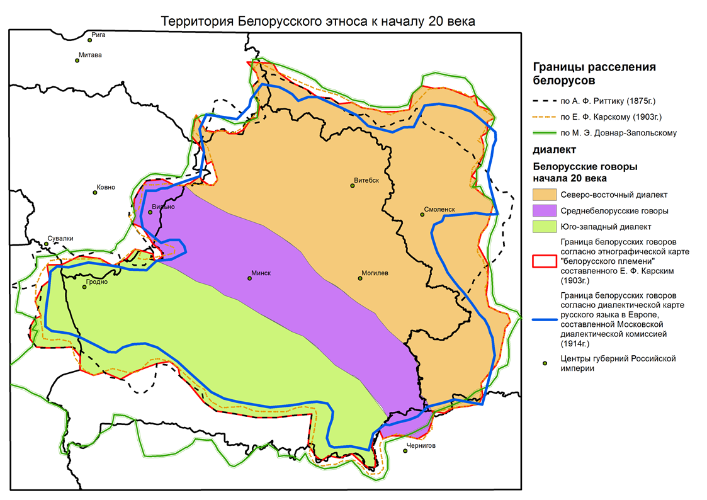
Реформы 1860 – 1870-х гг. ускорили социально-экономическое развитие Беларуси, содействовали становлению рыночных отношений. Революционная волна начала ХХ в. способствовала подъему новой волны белорусского национально-освободительного движения. В первую мировую войну (1914 - 1918 гг.) территория Беларуси вновь стала ареной кровопролитных боевых действий.
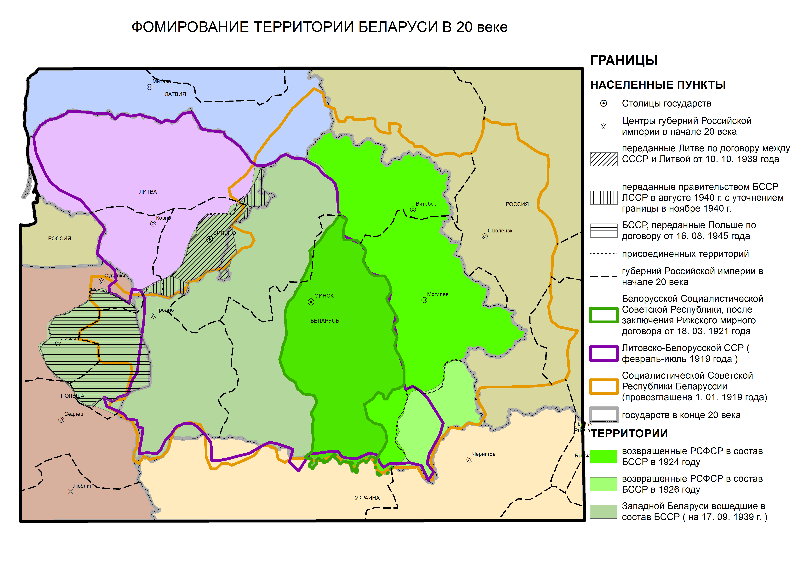
25 марта 1918 г. Беларусь вновь обрела независимость. В этот день было объявлено о создании Белорусской Народной Республики, независимой от распадающейся Российской империи. 1 января 1919 г. провозглашена Советская Социалистическая Республика Беларусь (позднее переименованная в Белорусскую Советскую Социалистическую Республику), которая в декабре 1922 г. вошла в состав СССР. Западная Беларусь, отошедшая к Польше по Рижскому договору 1921 г., воссоединилась с БССР в 1939 г. В 1920-1930-е гг. в Беларуси активно шли процессы индустриализации, сформировались новые отросли промышленности и сельского хозяйства. При этом продолжалась политика насильственной русификации, десятки тысяч представителей интеллигенции, культурной и творческой элиты, просто зажиточных крестьян было расстреляно коммунистами, сослано на каторгу в Сибирь и Среднюю Азию.
С начала Великой Отечественной войны 1941-1945 гг. территорию Беларуси оккупировали немецко-фашистские захватчики. В тылу врага развернулось широкая партизанская и подпольная борьба. В 1944-45 гг. Беларусь была освобождена Красной Армией.
За годы войны в Беларуси погиб каждый четвертый житель, страна потеряла более половины национального богатства. В руины были превращены 209 городов и 9200 сёл и деревень.
В 1950 — 1970-е гг. быстрыми темпами шло восстановление страны, интенсивно развивались промышленность и сельское хозяйство. Экономика Беларуси была ключевой частью народнохозяйственного комплекса СССР, Беларусь называли «сорочным цехом» советской экономики.
Политические процессы конца 1980 – начала 1990-х гг. привели к распаду Советского Союза и краху коммунистической системы. 27 июля 1990 г. Верховный Совет БССР принял Декларацию о государственном суверенитете. 19 сентября 1991 г. БССР была переименована в Республику Беларусь. В декабре 1991 г. в результате Беловежских соглашений Беларусь вошла в Содружество Независимых Государств.